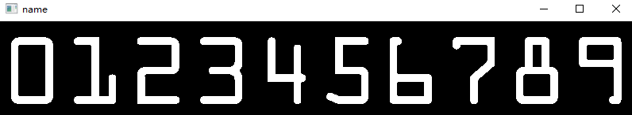
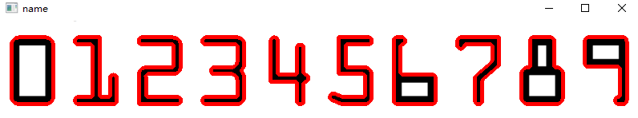
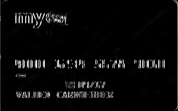
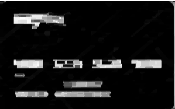
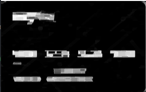
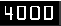
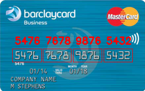

Opencv项目实战：信用卡数字识别 导入库，定义展示函数 1 2 3 4 5 6 7 8 9 10 import cv2import numpy as npfrom imutils import contoursimport myutils def img_show (img, name ): cv2.imshow('name' , img) cv2.waitKey(0 ) cv2.destroyAllWindows()
读取模板图片，进行轮廓检测。 而轮廓检测cv2.findContours()接收是二值图像，所以先对模板进行灰度和二值处理，由于原图像是白底黑图，所以进行反二值处理为黑底白图。
1 2 3 4 5 6 7 number = cv2.imread('./images/ocr_a_reference.png' ) number_gray = cv2.cvtColor(number, cv2.COLOR_BGR2GRAY) number_gray = cv2.threshold(number_gray, 10 , 255 , cv2.THRESH_BINARY_INV)[1 ]
原图：
转化后：
轮廓检测 外轮廓，并绘出轮廓
1 2 3 4 5 6 refCnts, hierarchy = cv2.findContours(number_gray.copy(), cv2.RETR_EXTERNAL, cv2.CHAIN_APPROX_SIMPLE) cv2.drawContours(number, refCnts, -1 , (0 , 0 , 255 ), 3 )

轮廓进行排序 应用自定义库myutils对绘出的轮廓进行排序
1 2 3 4 5 6 7 8 9 10 11 12 13 14 15 16 17 18 19 20 21 22 23 def sort_contours (cnts, method="left-to-right" ): reverse = False i = 0 if method == "right-to-left" or method == "bottom-to-top" : reverse = True if method == "top-to-bottom" or method == "bottom-to-top" : i = 1 boundingBoxes = [cv2.boundingRect(c) for c in cnts] (cnts, boundingBoxes) = zip (*sorted (zip (cnts, boundingBoxes) key=lambda b: b[1 ][i], reverse=reverse)) return cnts, boundingBoxes refCnts = myutils.sort_contours(refCnts, method="left-to-right" )[0 ]
定义一个空字典进行模板匹配
digits={}
对轮廓进行遍历 得到(x, y, w, h)值做外接矩形，并将外接矩形轮廓加入到字典中，其字典的key就是轮廓所代表的值
1 2 3 4 5 6 7 8 for i, c in enumerate (refCnts): (x, y, w, h) = cv2.boundingRect(c) roi = number_gray[y: y+h, x: x+w] roi = cv2.resize(roi, [57 , 88 ]) digits[i] = roi
定义形态学操作所需要的卷积核
1 2 3 ntKernel = cv2.getStructuringElement(cv2.MORPH_RECT, (9 , 3 )) ffKernel = cv2.getStructuringElement(cv2.MORPH_RECT, (5 , 5 ))
读取信用卡图片 引用myutils中的函数缩小尺寸，并进行灰度处理
1 2 3 4 5 6 7 8 9 10 11 12 13 14 15 16 17 18 def resize (image, width=None , height=None , inter=cv2.INTER_AREA ): dim = None (h, w) = image.shape[:2 ] if width is None and height is None : return image if width is None : r = height / float (h) dim = (int (w * r), height) else : r = width / float (w) dim = (width, int (h * r)) resized = cv2.resize(image, dim, interpolation=inter) return resized card_01 = cv2.imread('./images/credit_card_01.png' ) card_01 = myutils.resize(card_01, width=300 ) card_01_gray = cv2.cvtColor(card_01, cv2.COLOR_BGR2GRAY)
礼帽操作 对图像进行礼帽操作(原始图像-(开运算结果(先腐蚀后膨胀))），作用：获得图像的噪声信息或者比原始图像边缘更亮的边缘部分。
1 2 card_tophat = cv2.morphologyEx(card_01_gray, cv2.MORPH_TOPHAT, ntKernel)
Sobel算子 进行Sobel算子进行梯度运算，对噪声具有平滑作用，能很好的消除噪声的影响。
1 2 3 4 5 6 7 gradX = cv2.Sobel(card_tophat, ddepth=cv2.CV_32F, dx=1 , dy=0 , ksize=-1 ) gradX = np.absolute(gradX) minVal, maxVal = np.min (gradX), np.max (gradX) gradX = 255 * (gradX - minVal) / (maxVal - minVal) gradX = gradX.astype('uint8' )

闭操作 进行闭操作（先膨胀在腐蚀），可以填充白色物体内细小黑色空洞的区域、连接临近物体
1 2 gradX = cv2.morphologyEx(gradX, cv2.MORPH_CLOSE, ntKernel)

二值化处理 二值化处理，将两种主题明显分隔开，用THRESH_OTSU自动做判断
1 2 thresh = cv2.threshold(gradX, 0 , 255 , cv2.THRESH_BINARY | cv2.THRESH_OTSU)[1 ]

闭操作 图像中白色块内有出先黑色空洞，再次使用闭操作填充黑色空洞部分
1 2 3 gradX = cv2.morphologyEx(gradX, cv2.MORPH_CLOSE, ffKernel) img_show(gradX, "gradx" )
轮廓检测， 绘制轮廓 1 2 3 4 5 threshCnts, hierarchy = cv2.findContours(thresh.copy(), cv2.RETR_EXTERNAL, cv2.CHAIN_APPROX_SIMPLE) cnts = threshCnts cur_img = card_01.copy() cv2.drawContours(cur_img, cnts, -1 , (0 , 0 , 255 ), 3 )
过滤轮廓 选出需要的4个数字轮廓，并定义空列表添加所需轮廓
1 2 3 4 5 6 7 8 9 10 11 12 13 locs = [] for i, c in enumerate (cnts): (x, y, w, h) = cv2.boundingRect(c) ar = w / float (h) if 2.5 < ar < 4.0 : if (40 < w < 55 ) and (10 < h < 20 ): locs.append((x, y, w, h)) print (len (locs)) locs = sorted (locs, key=lambda x: x[0 ])
得到每一个轮廓 先定义一个空列表output = []储存信用卡的数字
遍历locs列表里4个轮廓的每一个轮廓，对每一个轮廓的图像进行，轮廓检测与排序，从而的每一个轮廓中每一个数字的轮廓
1 2 3 4 5 6 7 8 9 10 11 for (i, (gx, gy, gw, gh)) in enumerate (locs): group_out = [] group = card_01_gray[gy - 5 : gy + gh + 5 , gx - 5 : gx + gw + 5 ] group = cv2.threshold(group, 0 , 255 , cv2.THRESH_BINARY | cv2.THRESH_OTSU)[1 ] digitCnts, hierarchy = cv2.findContours(group.copy(), cv2.RETR_EXTERNAL, cv2.CHAIN_APPROX_SIMPLE) digitCnts = contours.sort_contours(digitCnts, method="left to right" )[0 ]
阈值处理得到的每一个轮廓图像

得到每一个数字 遍历每一个轮廓中的数字
1 2 3 4 5 6 7 8 for (i, (gx, gy, gw, gh)) in enumerate (locs): pass for c in digitCnts: (x, y, w, h) = cv2.boundingRect(c) roi = group[y:y + h, x:x + w] roi = cv2.resize(roi, (57 , 88 ))
模板匹配 将信用卡得到的数字图像与模板数字图像进行模板匹配
1 2 3 4 5 6 7 8 9 10 11 12 13 14 15 16 17 18 19 20 21 22 23 for (i, (gx, gy, gw, gh)) in enumerate (locs): pass for c in digitCnts: pass scores = [] for (digit, digitROI) in digits.items(): result = cv2.matchTemplate(roi, digitROI, cv2.TM_CCOEFF) (_, score, _, _) = cv2.minMaxLoc(result) scores.append(score) group_out.append(str (np.argmax(scores))) cv2.rectangle(card_01, (gx - 5 , gy - 5 ), (gx + gw + 5 , gy + gh + 5 ), (0 , 0 , 255 ), 1 ) cv2.putText(card_01, "" .join(group_out), (gx, gy - 15 ), cv2.FONT_HERSHEY_SIMPLEX, 0.65 , (0 , 0 , 255 ), 2 ) output.extend(group_out)
这里由于result是与模板里的数字轮廓相匹配的程度，而其模板图片中轮廓所代表的值与scores的索引相同，顺序都为【0-9】，转换为字符即为正确数字。然后绘出矩形和数字在图像中即可完成。
结果 最后打印输出结果。
1 2 print ('Card number :{}' .format ("" .join(output)))img_show(card_01, 'card_01' )
输出: Card number :4000123456789010
others：
